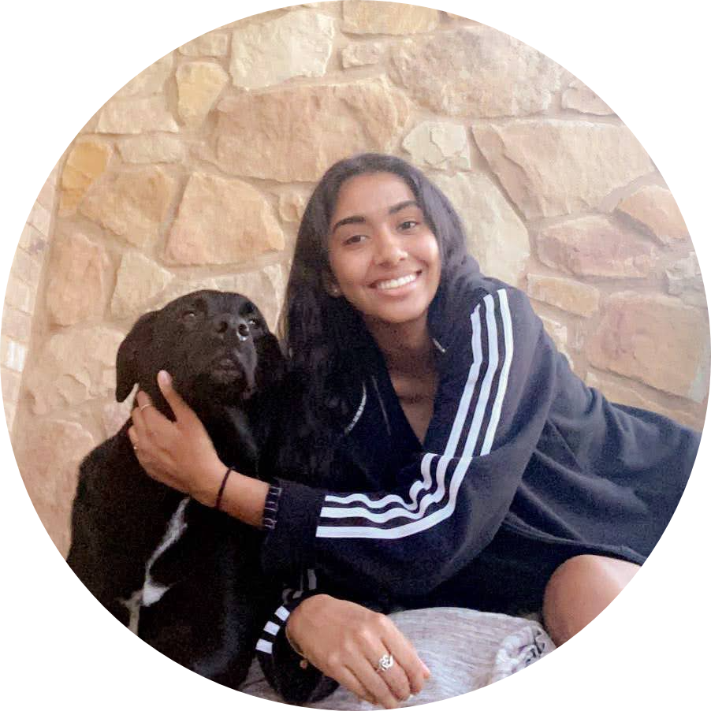

What does Shruti know?
Contact Me
High School Student
I have skills in some programming langauges like swift, C, Java, html, CSS,
but I want to learn more langauges and the true fundamentals behind computer science.
Shruti's CS skills
- Programming in Swift with XCode
- Knowledge from Commputer Science 2 Web Dev
- Kode With Klossy Summer 2020, built an app called EZVote
- Promgramming in C
- Learned from Harvard CS50
- Currently enrolled in Web Development
- Also have exposure to Web Dev from Udemy
Top 3 Goals in Life
- Travel the world
- Become a Software Engineer
- Give back to my community and parents
Computer Science classes Shruti has taken
| Grade |
Class Name |
| 9th |
Computer Science 1 |
| 11th |
Computer Science 2: App Dev |
| 12th |
Computer Science 2: Web Dev |
| 12th |
Computer Science 2: Robotics |
| 12th |
AP Computer Science A |
| *Also took Udemy |